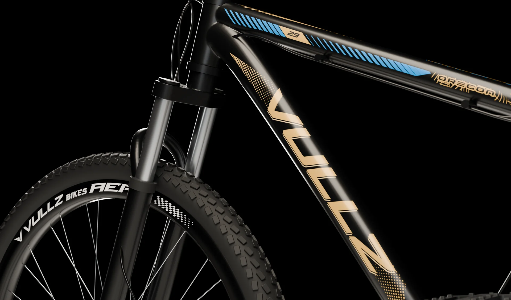
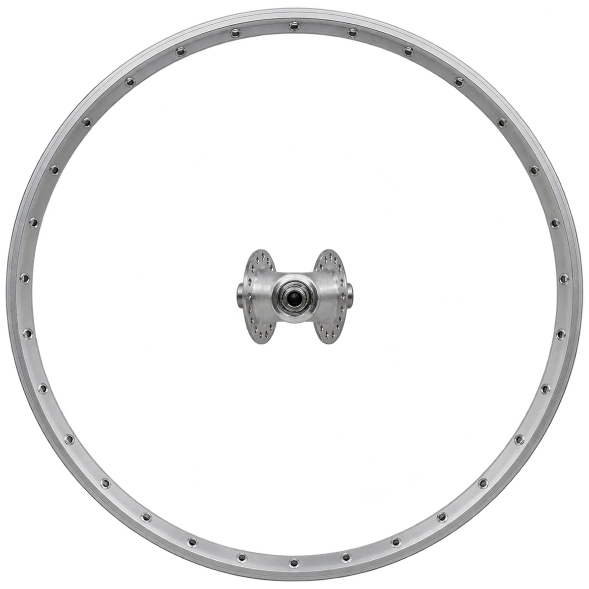
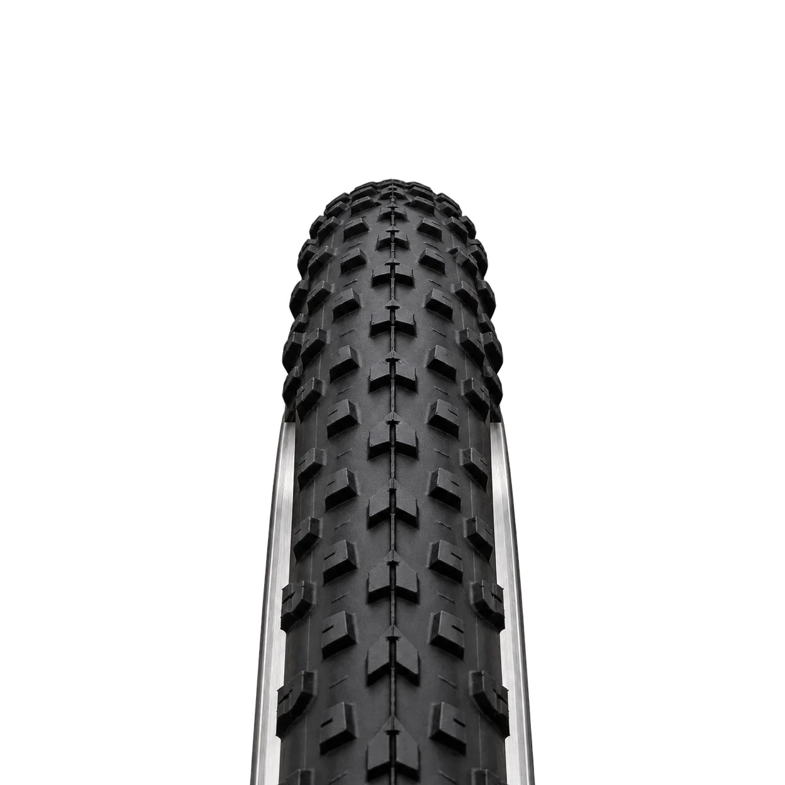
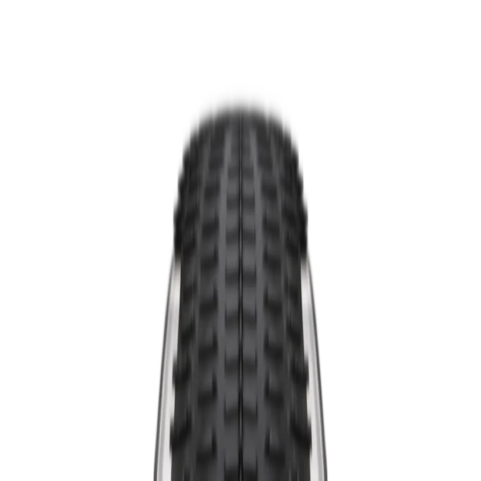
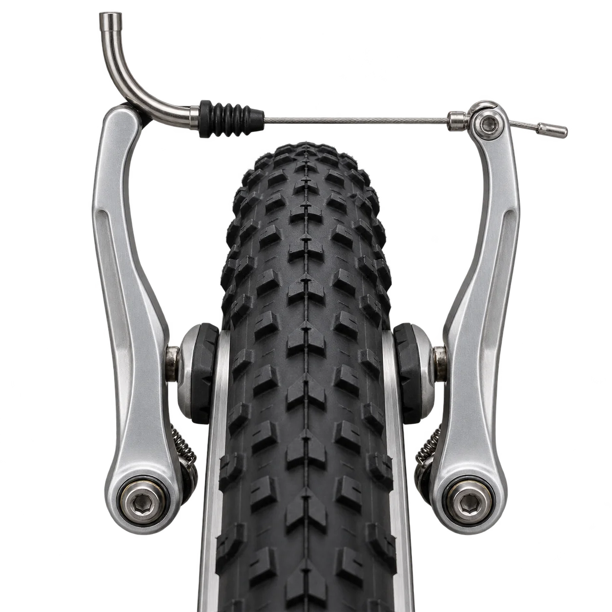

É aqui que tudo
ganha forma.
Conheça de perto o processo de fabricação das bicicletas VULLZ, e prepare-se para descobrir novos caminhos.

Sempre em movimento.
Conheça nossos modelos:
Conheça de perto o processo de fabricação das bicicletas VULLZ, e prepare-se para descobrir novos caminhos.
Do asfalto às trilhas, mais liberdade para pedalar do seu jeito.

Cada raio, cubo e aro e cada ajuste têm sua importância. Afinal, são os detalhes que fazem a diferença.
Cada modelo VULLZ recebe um sistema de frenagem de acordo com sua configuração.



Nossas bikes contam com um sistema de transmissão preciso, para proporcionar uma pedalada mais confortável.
É você, a bike e a vontade de pedalar.
Oito modelos para cada fase, do primeiro pedal à trilha de fim de semana.
Cinco elétricos, do scooter de todo dia ao triciclo com espaço pra dois.
O catálogo em PDF, pra ver com calma, imprimir ou mandar pra alguém.
Cores, ficha técnica e detalhes de cada modelo.